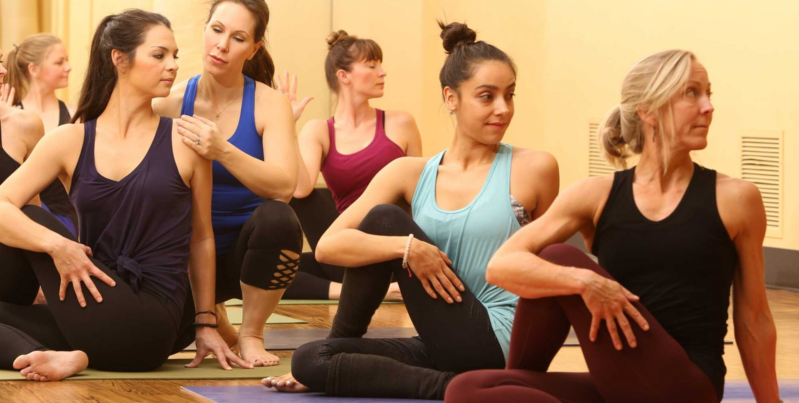

YBD1
Beginner-friendly fundamentals with attention to alignment, breathing, and basic vinyasa.
Wheaton · Downers Grove · Western Springs
From your first vinyasa class to a high-energy Sculpt session, explore a practice that fits your experience, interests, and preferred level of heat.

Your practice. Your next class.
Yoga by Degrees offers classes for beginners through experienced students, with formats ranging from slower restorative practice to flowing yoga and strength-focused sessions.
Heat varies by format. Read the class description and check the temperature, experience level, and instructor on the live schedule before booking.
Explore the class styles
Beginner-friendly fundamentals with attention to alignment, breathing, and basic vinyasa.
Flowing sequences with intermediate and more advanced options. Check the listed level and heat.
A high-energy class combining flow and light weights.
Slower classes with longer holds; some sessions include guided meditation.
Hot formats featuring a set sequence or a blend of traditional hot yoga and vinyasa.
A class combining Pilates principles with interval training.
Three locations. One place to start.
Choose a location to see current instructors, classes, and booking options.
241 Rice Lake Square
Wheaton, IL 60189
54 Ogden Ave
Downers Grove, IL 60515
4700 Gilbert Ave, Suite 16
Western Springs, IL 60558
Reservations, prices, and availability are handled directly by Yoga by Degrees. Check the schedule before traveling to the studio.
Featured instructor · Wheaton

Dani DiMatteo teaches Yoga Sculpt at Yoga by Degrees in Wheaton. She brings an athletic background, motivating energy, and a love of great music to her teaching.
Explore her REC spotlight to watch her original Reel, get to know the person behind the class, and find her studio links.
Explore Dani’s page →Dani is a featured REC instructor. Visit the official YBD teacher page for the full roster.
Meet the Yoga by Degrees team ↗More from Yoga by Degrees
Find current memberships, class packages, and teacher training information directly from the studio.
Make your instructor’s day
Taken a class you loved? Find your instructor on REC and share a genuine recommendation so someone else can discover them.
Download REC for iPhoneCompare local yoga, Yoga Sculpt, and Lagree options, with instructor profiles and current studio booking links.
Read the Wheaton yoga & fitness guide →